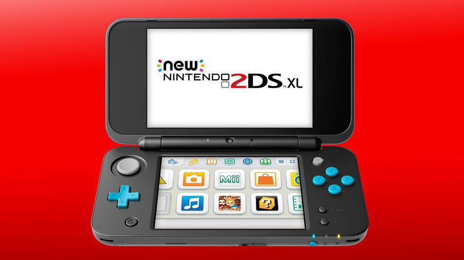

New 2DS XL: la nueva consola que presenta Nintendo
Fecha de publicación 08 de Mayo de 2017 y obtenida de la página web www.tecnomagazine.net
La empresa Nintendo acaba de anunciar que desea ampliar su diferentes tipos de consolas portátiles con la nueva New 2DS XL; el lanzamiento de este nuevo modelo será mostrado en las tiendas de Europa el 28 de julio de este mismo año, con un costo aproximado de 150 dólares, aunque esta cifra todavía es relativa. Esta empresa japonesa ha anunciado de sorpresa esta versión portátil mejorada, la Nintendo NEW 2DS XL, que viene con buenas y mejores características. Este modelo nuevo viene con una pantalla un poco más grande, además con una potencia más veloz y mejorada en comparación del modelo New Nintendo 3DS XL. Una de las novedades destacadas de New Nintendo 2DS XL es que viene incluida con la introducción de un lector NFC, con el propósito de ofrecer la posibilidad de jugar con las figuras de Amiibo..
Por así decirlo Amiibo son figuras reales que se obtienen a parte de la Nintendo y se pueden usar para conseguir trajes nuevos, equipamiento, habilidades y otro contenido divertido. En cuanto al diseño de esta consola como ya fue mencionado, cuenta con una pantalla un poco más grande de 4,88 pulgadas. Además tienen un peso ligero de 260 gramos para una mayor comodidad, y sostiene el mismo diseño plegable de las Nintendos originales. Dentro del paquete de venta esta consola tendrá incluida un cargador, esto es algo que la empresa Nintendo había ignorado durante distintas versiones. Este dispositivo saldrá a la venta en las calles de Europa en dos combinaciones de colores que serán negro-turquesa y blanco-naranja. La consola portátil Nintendo 2DS XL, está dirigida principalmente al público juvenil e infantil, ya que este rango de edades es el que más demandas ha generado de sus productos cuando se refiere a los dispositivos portátiles de esta empresa japonesa. Está centrada más que todo en los jugadores inexpertos entre 4 a 6 años de edad que apenas están entrando en el mundo de los videojuegos, para aquellos que tengan la intención de jugar Mario Kart o que quieran divertirse jugando Pokemon la New 2DS XL cumple con sus deseos. Esta empresa asegura que van a seguir teniendo nuevos y grandes juegos para esta consola, además va a contar con su propio ritmo en la forma que se desarrolla su propio agrupamiento de experiencias. Aunque esta versión no cuenta con un soporte en 3D, de igual forma sigue siendo 100% compatible con los juegos que están desarrollados para la consola 3DS.
Nintendo se enfocó principalmente en su tecnología, que ofrece la capacidad de jugar videojuegos en tercera dimensión sin la necesidad de hacer uso de lentes especiales para divertirse con la consola 3DS, pero pocos fueron los desarrolladores de videojuegos que supieron aprovechar esta nueva dimensión. Debido a eso, decidieron lanzar al mercado la consola 2DS, ya que como su nombre lo indica, no cuenta con un modo en tercera dimensión. Además, esta es más robusta y barata, les ofrece la facilidad a los padres de regalársela a sus hijos. Si te interesa adquirir esta nueva consola 2DS XL puedes visitar la web de Nintendo en español.